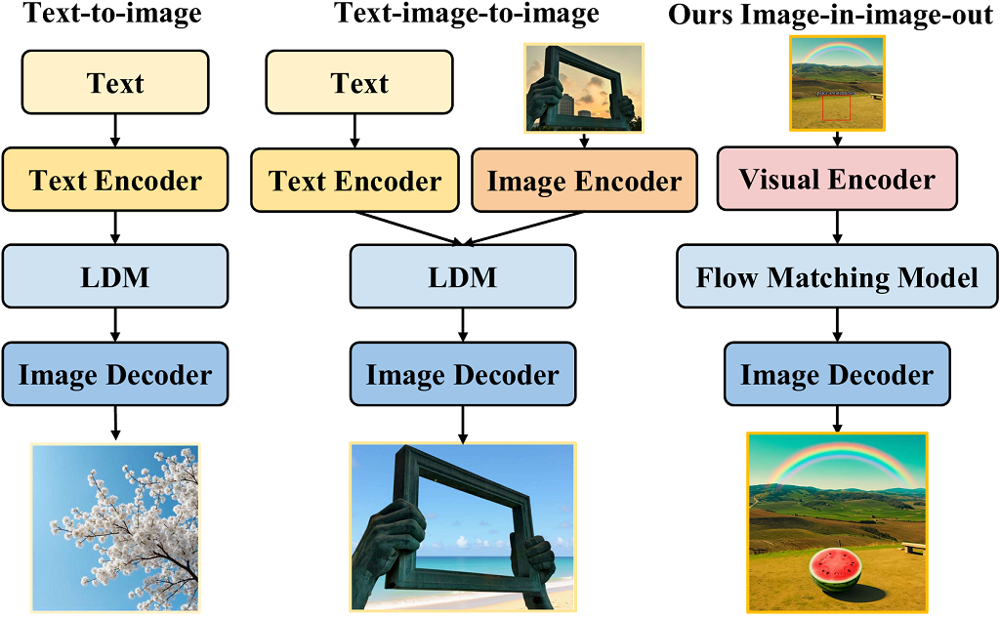
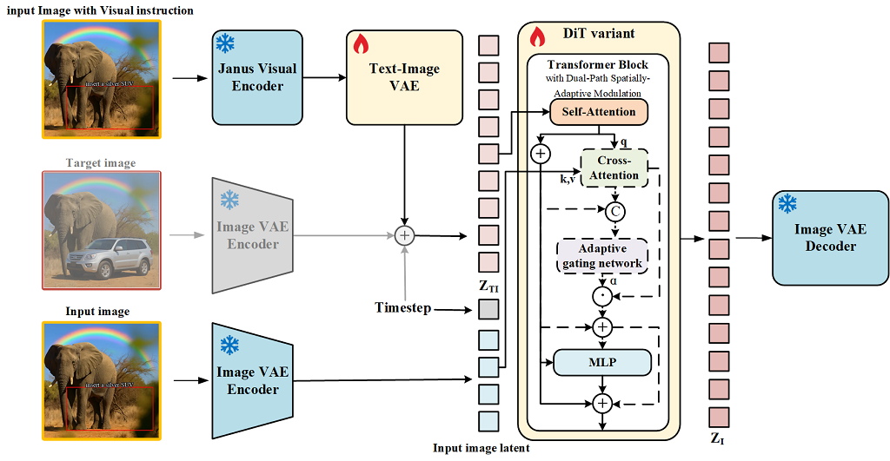
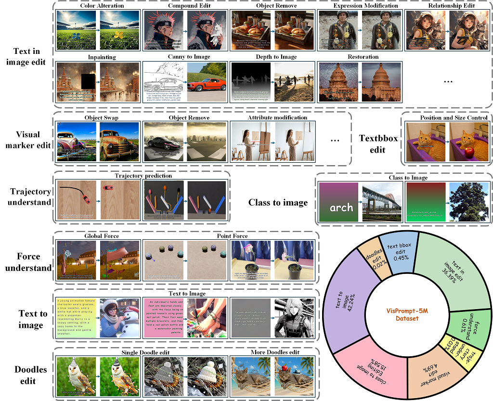
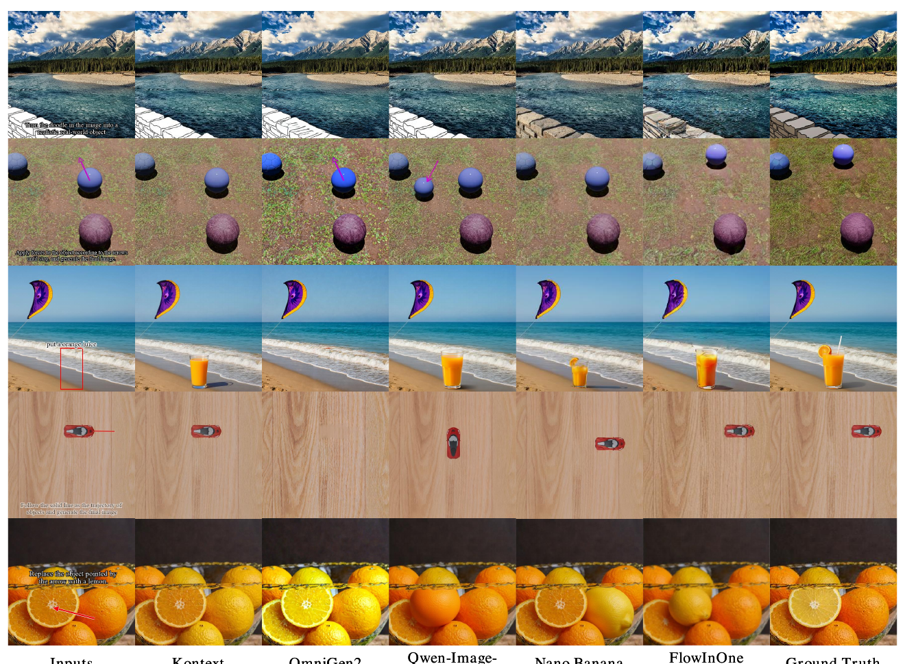

FlowInOne: Unifying Multimodal Generation as Image-in, Image-out Flow Matching

1. 出发点 (Motivation)
多模态生成长期被一条文本主导的假设统治:语言编码意图,视觉执行意图。从 DDPM/LDM/DiT 到各种 T2I,都靠语言 embedding 作为核心条件源。这带来一个根本性的不对称:语言能控制视觉,但视觉自己不能推理、不能生成。理解、编辑、生成因此被劈成三块,很难在一个模型里统一。
近来有一批 vision-centric 工作(把文字渲染成像素再处理,如 "Language modelling with pixels")证明:视觉模态本身足够表达,可以当多模态理解的统一底座。但它们停在感知层面,把 vision-first 的生成潜力留白了。于是本文问了个尖锐的问题:
能不能造一个模型,完全在视觉空间里既推理又生成?
流匹配(Flow Matching)给了原则性答案。相比扩散靠"渐进去噪",FM 直接学一个分布到另一个分布的连续速度场,采样更快、优化更稳,且允许非高斯源分布——只要源和目标同构(isomorphic)。这恰好能把"感知"和"生成"统一到一个确定性传输原理下。
FlowInOne 的做法:把文本、布局、编辑指令全部渲染进一张输入画布 \(I_v\)(visual prompt),它就是流的起点状态;模型学一个连续传输过程,把这个状态演化成目标图。这样一举消掉了三样东西——噪声调度、扩散采样、任务专属条件头。
三个贡献:① 把多模态生成重构成 vision-centric 的「图进图出」范式,删掉文本编码器和模态桥;② 提出 FlowInOne,用统一流匹配把多模态变换建模成共享潜空间里的连续演化;③ 构建 VisPrompt-5M(500 万视觉提示对)和 VP-Bench 评测基准。
2. 方法 (Method)
FlowInOne 有三个环环相扣的部件:(a) 把一切指令渲染进画布 + Janus 视觉编码器提特征;(b) text-image VAE 把统一视觉 token 映射成源潜变量 \(z_0\);(c) 一个 DiT 变体用 Dual-Path Spatially-Adaptive Modulation 在共享潜空间里做流匹配,从 \(z_0\) 演化到目标图潜变量 \(z_1\)。

2.1 流匹配预备:线性插值 + 恒定速度
流匹配把生成建模成从源分布 \(p_0\) 到目标 \(p_1\) 在 \(t\in[0,1]\) 上的连续传输。训练时在样本对 \((z_0, z_1)\) 之间构造可微概率路径 \(z_t\),直接给出监督用的真值速度:
—— 翻译:在起点 $z_0$ 和终点 $z_1$ 之间拉一条(近似)直线,$t$ 从 0 走到 1 就从源滑到目标。这条线的斜率(速度)几乎是常数 $z_1 - z_0$($\sigma_{\min}$ 是个 $10^{-5}$ 量级的小修正)。网络只要学会在任意 $(z_t, t)$ 预测这个速度,推理时解 ODE 积分回去即可。比扩散"每步猜噪声"直白得多。
关键区别:FlowInOne 显式定义了一个非高斯源分布——\(z_0\) 是统一视觉指令经视觉编码器 + text-image VAE 抽出的潜状态,\(z_1\) 是目标图潜。因为两者在共享空间里同构,推理就是从 \(t{=}0\) 到 \(t{=}1\) 解 ODE \(\frac{dz_t}{dt}=v_\theta(z_t,t)\),把指令确定性地演化成目标图。
代码里 psi 就是上面的插值、Dt_psi 就是真值速度,一一对应:
repo/diffusion/flow_matching.py:L309-L322 — 流匹配的概率路径 psi(=z_t)与真值速度 Dt_psi(=v*)
def psi(self, t, x, x1): # x=z0(源/noise), x1=z1(目标)
t = self.expand_t(t, x)
return (t * (self.sigma_min / self.sigma_max - 1) + 1) * x + t * x1
# = (1 - (1-σmin)t) · z0 + t · z1 ← 正是 Eq.1 的 z_t
def Dt_psi(self, t, x, x1):
return (self.sigma_min / self.sigma_max - 1) * x + x1
# = z1 - (1-σmin) · z0 ← 正是 Eq.1 的 v*
训练损失是三项之和:流匹配 MSE + text-image VAE 的 KL + CLIP 对比损失(用来对齐视觉/文本特征)。注意 KL 被改成了一个更"激进拉向标准正态"的变体:
repo/diffusion/flow_matching.py:L268-L303 — 组合损失:FM MSE(多尺度) + 魔改 KL + CLIP 对比
# 魔改 KL:把 mu→0 的惩罚从二次改成六次 [(0.3*mu)**6],更"温柔"地约束均值
kld_loss = -0.5 * torch.sum(1 + log_var - (0.3 * mu) ** 6 - log_var.exp(), dim=1)
loss_mlp = recons_loss + kld_loss * 1e-2 # recons_loss 其实是 CLIP 对比损失
x_noisy = self.psi(t, x=noise, x1=x_start) # z_t
target_velocity = self.Dt_psi(t, x=noise, x1=x_start) # v*
prediction = nnet(x_noisy, log_snr=log_snr, image_latent=image_latent,
use_cross_atten_mask=use_cross_atten_mask) # ← 双路开关在此
target = multi_scale_targets(target_velocity, levels=len(prediction), scale_correction=True)
loss_diff = sum(coeff * self.mos(pred - target[pred.shape[-1]])
for pred, coeff in check_zip(prediction, loss_coeffs)) # 多尺度 FM 损失
loss = loss_diff + loss_mlp
2.2 统一处理:把文字当成视觉几何
离散语言符号和连续视觉纹理天然异质,在流匹配里对齐很难。FlowInOne 的范式转变是:把文本指令和各种视觉线索直接渲染到图像画布上,让空间布局和结构先验被原生保留,不再需要复杂的跨模态对齐模块。
对这张统一图 \(I_v\),用 Janus-Pro-1B 的视觉编码器(SigLIP ViT)抽 patch 级语义特征,再经 MLP projector 投到目标嵌入空间:
—— 翻译:一张"写满指令的图"进去,出来一串 patch token,每个 token 同时编码了"这块区域画了什么"和"这里写了什么字/画了什么箭头"。文字不再走 tokenizer,而是作为图像几何的一部分被视觉编码器看见。
然后 text-image VAE 不直接预测源潜,而是参数化一个分布再采样源状态(这是把非高斯源接进流匹配的关键):
—— 翻译:视觉编码器给的特征 $X$ 先被压成一个高斯分布的均值和方差,再从里面采一个 $z_0$ 当流的起点。对称地,冻结的 Image VAE 把目标图编码成 $z_1$。两者在同一个潜空间里,流匹配才能直接在它们之间连线。
2.3 Dual-Path Spatially-Adaptive Modulation:本文真正的"聪明处"
问题:视觉编码阶段有信息压缩,初始潜 \(Z_{TI}\) 常抓不住源图的细粒度结构。纯文生图无所谓(本来就不该保留结构),但图像编辑必须保住背景、只改指定区域。于是作者设计了一个能按任务类型切换计算路径的机制。
设第 \(l\) 层隐状态 \(H^{(l)}\),先过 self-attention 拿全局上下文:
编辑分支:用 Image VAE 把源图 \(I_{src}\) 编码成 \(z_{src}\),reshape 成参考序列 \(S\),以 \(\tilde H^{(l)}\) 为 Query、\(S\) 为 Key/Value 做交叉注意力,取出结构增量 \(\Delta H_{\text{struct}}\):
然后是核心:一个轻量门控网络,把当前状态和结构增量拼起来,预测一个 token 级、各向异性的权重向量 \(\Lambda\in[0,1]^N\)——它能在像素级区分"属于背景、要严格保留"和"属于编辑区、要重建":
—— 翻译:把"我现在生成到哪了"和"源图这里长啥样"两串特征并排喂给一个小 MLP,它给每个 token 打一个 0~1 的分。分高=这块要照抄源图结构,分低=这块要按指令重画。这就是"空间自适应":不同位置注入源图信息的力度不一样。
最后用一个二值任务指示器 \(I_{\text{edit}}\in\{0,1\}\) 控制这条结构分支通不通:
—— 翻译:纯文生图时 $I_{\text{edit}}{=}0$,整个结构注入项归零,模型严格跟着文本语义演化,不被源图"污染";编辑时 $I_{\text{edit}}{=}1$,门控 $\Lambda$ 精细地把源图结构掺进来。一个开关 + 一个门控,统一了"从无到有生成"和"改一张已有图"两种本质不同的任务。
代码里 CrossAttention 干的正是 Eq.4 + Eq.5——交叉注意力算出 ca_output,再把它和输入拼起来过 weight_mlp(末尾就是 nn.Sigmoid())得到 token 级门控 ca_weights:
repo/libs/model/dimr.py:L198-L248 — 交叉注意力 + token 级 Sigmoid 门控(Eq.4 / Eq.5)
self.weight_mlp = nn.Sequential( # 门控网络:2C → C/4 → 1 → Sigmoid
Linear(config.dim * 2, config.dim // 4),
nn.GELU(),
Linear(config.dim // 4, 1),
nn.Sigmoid(), # → Λ ∈ [0,1]^N,每个 token 一个标量
)
def forward(self, x, image_latent, pos=None):
q = ...(x) # Query 来自当前生成状态 H̃
k, v = ...(image_latent) # Key/Value 来自源图潜 S
atten_output = F.scaled_dot_product_attention(q, k, v, attn_mask=None) # ΔH_struct
ca_output = self.dense(atten_output...)
combined = torch.cat([x_input, ca_output], dim=-1) # [H̃ ‖ ΔH_struct]
ca_weights = self.weight_mlp(combined) # Λ = σ(MLP[·])
return ca_output, ca_weights
而 Eq.6 的"开关 + 门控注入"在 TransformerBlock 里:use_cross_atten_mask 就是 \(I_{\text{edit}}\) 的取反——对纯生成任务把交叉注意力整支跳过:
repo/libs/model/dimr.py:L283-L297 — Eq.6:用 use_cross_atten_mask 切换双路,门控相乘注入
if self.use_cross_attention and image_latent is not None and not should_skip_cross_attn:
ca_output, ca_weights = self.block1_cross(x, image_latent, pos)
x = x + self.dropout(ca_output * ca_weights) # H̃ + Λ ⊙ ΔH_struct
elif should_skip_cross_attn:
pass # I_edit = 0:结构分支彻底旁路
x = x + self.dropout(self.block2(x)) # MLP
推理侧对上了:use_cross_atten_mask 对 class2image/text2image 置 True(旁路结构分支),其余编辑任务保持交叉注意力活跃——这正是论文"纯生成 \(I_{\text{edit}}{=}0\)、编辑 \(I_{\text{edit}}{=}1\)"主张的代码实证:
repo/i2i.py:L205-L233 — 推理:按任务名切换双路;image_latent 是输入图的 VAE 潜(交叉注意力的 K/V 源)
mask_list = [('class2image' in parts or 'text2image' in parts) for parts in ...]
use_cross_atten_mask = torch.tensor(mask_list, dtype=torch.bool) # 纯生成 → 旁路 CA
...
input_moments = autoencoder(batch_tensors_vae, fn='encode_moments')
input_latent = autoencoder.sample(input_moments) # 源图潜 = 交叉注意力的 K/V
samples = ode_fm_solver_sample(nnet, context=contexts, image_latent=input_latent,
use_cross_atten_mask=use_cross_atten_mask)
3. 结论 (Key findings)
数据集 VisPrompt-5M:8 类任务、共 500 万对(Iv, I⋆)。占比:文生图 42.24%、text-in-image edit 36.39%、class-to-image 15.58%、visual marker edit 4.69%、force understanding 0.61%、trajectory 0.19%、text bbox edit 0.45%、doodles edit 0.02%。每个样本把所有文本/空间指令直接嵌进输入画布,消除辅助文本通道、强制几何对齐。

主结果(VP-Bench,四类评委的总成功率 Total):1.2B 的 FlowInOne 在 Gemini3/GPT5.2/Qwen3.5/人工 下分别拿到 54.0% / 39.2% / 50.3% / 44.9%,全面碾压所有开源基线(OmniGen2 ~23–25%、FLUX.1-Kontext ~24–27%、Qwen-IE-2509 ~23–28%),并逼近商业模型 Nano Banana(在 GPT5.2 下反超,其余小幅落后)。

分维度看(每维满分 5):FlowInOne 在空间精度(Spatial Precision)上三个评委全场最高(3.42 / 3.24 / 3.30),指令忠实度和内容一致性也很强;唯一明显短板是**视觉真实感(Visual Realism)**低于 Nano Banana(这是 1.2B 小模型 + 256×256 分辨率的代价)。
定量指标(Table 3):FlowInOne 的 DINOv3 方向相似度均值 48.7% 超过 Nano Banana 的 47.3%——即细粒度空间/物理结构变化的准确性是全场第一,尤其在力/轨迹理解和 text-bbox 编辑上优势明显。CLIP-IQA/CLIP Score 显著超所有开源基线、接近商业模型。
关键消融:① 压缩方式——MLP+MLP(序列长和特征维都用 MLP 投)最好(18.12%),简单截断会丢边缘信息;② 调制方式——无交叉注意力 18.12% → 加双路交叉注意力 21.40% → Dual-Path SAM 23.1%,证明自适应门控确实在动态平衡一致性与指令跟随;③ 训练策略——联合训练 47.8% 碾压两阶段 29.1%,两阶段会灾难性遗忘,联合训练逼模型在同一视觉流空间里同时学语义生成+几何变换+物理规律。
4. 实现细节 (Implementation notes)
-
建立在 CrossFlow 之上。1.2B 的 FlowInOne 从 CrossFlow(直接把文本 embedding 流匹配到图像、无噪声无 cross-attn 的工作)初始化,在其 Transformer 块上新增交叉注意力层。这解释了为什么它能用相对小的模型和算力起步——继承了 CrossFlow 的流匹配先验。
-
三个 VAE / 编码器,冻结与否要分清。Janus-Pro-1B 视觉编码器(SigLIP ViT)抽统一图特征;text-image VAE 可训练(把视觉 token 参数化成源分布 \(z_0\));Image VAE(来自 LDM)全程冻结——既编码目标图 \(z_1\)(训练监督),又编码源图 \(z_{src}\) 供交叉注意力当 K/V(推理见 i2i.py:L224)。
-
训练配置:256×256 分辨率、240k 步、WebDataset 均衡采样、组合损失(FM + KL + CLIP 对比)。消融为省算力用 100k 步、batch 512。全部对齐预训练潜空间——序列长度和特征维必须匹配 CrossFlow 的潜空间,否则先验用不上。
-
魔改 KL 是个不显眼但实在的细节。代码把标准 KL 里 \(\mu^2\) 的均值惩罚换成了 \((0.3\mu)^6\)(flow_matching.py:L268),注释说是"让 mu→0 更温柔、var→1"。这类偏离教科书的小改动在正文里没提,是交叉读代码才能捞到的。
-
多尺度流匹配损失。预测不是单一分辨率,而是
multi_scale_targets产生多个尺度、各配一个loss_coeff加权(flow_matching.py:L296-L300)——继承自 DIMR 风格的多尺度 DiT,正文同样一笔带过。 -
CFG 的实现:训练时按
cfg_indicator概率把一批样本的条件"错位打乱"制造 null 条件(flow_matching.py:L276-L285),推理用unconditional_guidance_scale做 classifier-free guidance。 -
评测用了 2026 年的前沿 VLM 当评委(Gemini3 / GPT5.2 / Qwen3.5),外加 10 人交叉复核 250 个分层随机样本。因为 FID 对复杂视觉指令无能为力,作者转向"四条标准同时满足才算成功"的 VLM+人工 pass rate,并为公平把画布里的文字指令手动抽出来补给 VLM。
论文 vs 代码:一致性高,无重大出入。Eq.1/4/5/6 都能在 flow_matching.py 和 dimr.py 里找到逐行对应,双路开关 use_cross_atten_mask 的语义(纯生成旁路、编辑激活)与正文 \(I_{\text{edit}}\) 完全吻合。唯一"正文没细说、代码才有"的是魔改 KL、多尺度损失、CFG 错位打乱这几处工程细节。
5. 批判性总结 (Critical assessment)
Strengths
- 范式漂亮且自洽。"把一切渲染成图 → 单模态流匹配"这个想法把噪声调度、跨模态对齐、任务分支一次性消掉,概念上极简。数据、模型、评测三件套齐全且开源,是一份诚实的完整工作。
- Dual-Path SAM 是真的巧。用一个二值开关统一"生成"和"编辑"两种结构依赖完全相反的任务,再用 token 级 Sigmoid 门控做像素级的"保留 vs 重画"决策——消融(18.12→21.40→23.1)证明每一层都有增益。
- 空间/物理精度是硬优势。在力、轨迹、text-bbox 这些需要精确空间落地的任务上,1.2B 小模型 DINOv3 相似度反超 Nano Banana,坐实了"视觉指令原生对齐几何"的论点——这是文本条件管线天生吃亏的地方。
- 代码可交叉验证。核心公式逐行对得上,没有"正文吹、代码空"的落差。
Limitations / open questions
- 视觉真实感明显偏弱。256×256 + 1.2B 的组合让 Visual Realism 全面落后 Nano Banana。范式的优雅暂时以画质为代价,能否 scale 到高分辨率、大模型仍待验证。
- T2I 反而不突出。在纯文生图(T2I)列,FlowInOne 常低于 Nano Banana 甚至部分开源模型——"把文字渲染成图再读回来"对纯生成可能是绕远路,信息经视觉编码压缩有损。它的甜区是编辑/空间控制,不是从零生成。
- 依赖"指令能被渲染成图"。长文本、抽象语义、精细属性一旦塞进画布就受分辨率/版面限制;画布上文字太多会挤占像素、也考验视觉编码器的 OCR 能力。范式对"视觉可表达"的指令友好,对"纯语言细腻描述"未必。
- 评委即 2026 前沿 VLM,存在循环风险。用 Gemini3/GPT5.2 当主评委,而这些模型本身的空间 grounding 也有限(论文自己承认 marker 类 MLLM 与人工有偏差),pass rate 的绝对值需谨慎。
- 数据分布极度不均。force/trajectory/doodles 合计不到 1%,却在这些任务上报了亮眼数字——小样本类别的泛化稳健性存疑。
When to use / not use
- 适合:需要精确空间/几何/物理控制的图像编辑与指令跟随(布局编辑、箭头指代、力/轨迹、bbox 插入),尤其想要一个单模型、无任务分支的统一接口;算力有限、想在 CrossFlow 类流匹配底座上快速扩编辑能力。
- 不适合:追求极致画质的纯文生图或高分辨率商用出图(去用 FLUX/Nano Banana 类);指令高度依赖长篇自然语言细腻描述而非可视化线索的场景;对小众任务(涂鸦/力)要求生产级稳健的场景。
延伸阅读 (Further reading)
交叉验证比较(Cross-validation against similar work) —— FlowInOne 的"统一"和"vision-centric"主张,和本仓另外几篇的路线正好构成对照:
| 工作 | 核心结论 | 关键观察 | 与本文的异 / 同 |
|---|---|---|---|
| 本文 (FlowInOne) | 把文本/布局/指令全渲染成视觉输入,单个流匹配模型「图进图出」即可统一生成+编辑 | vision-centric 在空间/物理精度上超文本条件管线;编辑是甜区、纯 T2I 是短板 | — |
| boogu-image-2026 | 用 1/10 数据也能做「统一生成+编辑」大模型 | 走的仍是文本+图像条件的主流范式,靠数据/架构效率取胜 | 同:都追求"一个模型统一生成与编辑"。异:Boogu 保留文本条件桥,FlowInOne彻底删掉文本编码器、把条件视觉化 |
| jit-2025 | 何恺明 JiT:朴素 ViT 直接在像素空间做扩散,x-预测在流形假设下本质更优 | 质疑"必须在 latent + 复杂调度里做生成" | 同:都在"简化生成管线、挑战既有范式"上同向。异:JiT 简化的是去噪空间(像素 vs latent),FlowInOne 简化的是条件模态(视觉 vs 文本) |
| asymflow-2026 | 秩-非对称速度参数化,把 latent 流匹配 lift 到像素空间 | 流匹配的速度场参数化方式直接影响能否跨空间迁移 | 同:都基于流匹配、都在"源/目标空间同构"上做文章。异:AsymFlow 改的是速度参数化,FlowInOne 改的是源分布的来源(视觉指令而非噪声) |
分歧的可能成因:根子在**"统一"统一的是哪一层**。Boogu 统一的是任务接口(仍靠文本条件),FlowInOne 统一的是模态本身(全部视觉化)——所以后者在空间控制上赢、在纯文本生成上亏。而 JiT/AsymFlow 关心的是生成过程(去噪空间、速度参数化)而非条件来源,与 FlowInOne 正交:理论上可以把 FlowInOne 的视觉条件接到 JiT 的像素扩散或 AsymFlow 的速度参数化上,是互补而非竞争。
相关工作(外部):CrossFlow(直接文本→图像流匹配,本文的初始化底座)、"Language modelling with pixels"(文字渲染成像素的 vision-centric 感知先驱)、Janus-Pro(视觉编码器来源)、OmniGen2 / FLUX.1-Kontext / Qwen-Image-Edit(编辑基线)、Nano Banana(商业对照)。
讨论 / Comments
评论托管在本仓库的 GitHub Discussions, 需 GitHub 账号。